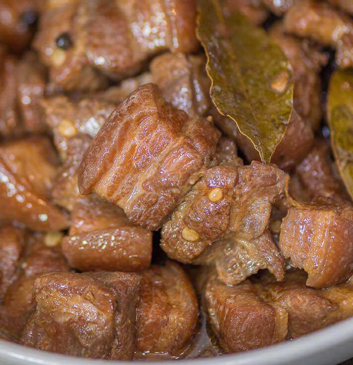

Pork Adobo
is a popular Filipino dish and cooking process in Philippine cuisine that involves meat, seafood, or vegetables marinated in vinegar, soy sauce, garlic, bay leaves, and black peppercorns, which is browned in oil, and simmered in the marinade. It has occasionally been considered the unofficial national dish in the Philippines.
-https://en.wikipedia.org/wiki/Philippine_adobo

Ingredients:
- 1 kg Pork (cut into cubes)
- 2 tablespoon garlic minced
- 5 pieces dried bay leaves
- 1/8 cup vinegar
- 1/4 cup soy sauce
- 2 tablespoon sugar
- 1 tablespoon crushed peppercorn
- 2 or more cups of water (enough to submerge pork in a pot)
Instructions:
- In a pot, Saute minced garlic until slightly brown.
- Add Pork, Saute until slightly brown.
- Add soysauce, vinegar, dried bay leaves, peppercorn, sugar and water.
- Boil until pork is soft and sauce is thin.
- Serve and Enjoy!
Return to Home